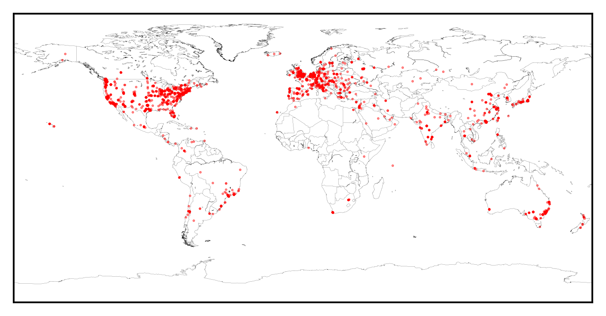

DES DR1 Data Access Interfaces
Matias Carrasco Kind
NCSA/UIUC
Near Field Cosmology with the DES DR1 and Beyond, June 27-29, KICP, Chicago, IL
Introduction

DES Survey: Gold (Data) Mine
DESDM: Excellent job at mining the data
Consumers outside the mine
Need to bring/expose gold (data) outside
Tools and interfaces
DES DR1 is out!
DES Access Tools
-
Collection of tools and interfaces being developed at NCSA
-
Public tools different from DES internal tools, public tools more limited
-
Using Cloud computing, "Big Data" technologies, Containers and Kubernetes
-
In close collaboration with NOAO and LIneA
DES Science Portal
desportal.cosmology.illinois.edu
-
@ NCSA but managed by LIneA
-
Interactive Coadd Image exploration
-
Wrapper interfaces to NCSA tools API
-
Internal and public deployments
Command line tools
(Press )
easyaccess 1.4.3

Motivations
-
DES DB in Oracle
-
Specifically designed for DES, public version is TBD
-
Enhanced SQL command line interpreter in Python
-
Astronomer friendly
-
Python API, web interface
-
There are many other CLI and GUI clients. Needed a simple tool, easy to use and install
Some cool features
- History of commands
- Smart TAB auto-completion of commands, columns, users, tables and path
- Very flexible configuration
- Completely open source and written in python
- Write tables in csv, tab, fits and hdf5 formats
- Load sql queries directly from a file
- Load table directly in to DB in one step, no memory issues
- Can be imported as python module (py2/py3)
- Tables are handled and displayed using pandas
- Can run python functions inside query (beta)
- Many more...
Installation
Making things even easier
- Clone it from github
- Using pip or easy_install
- Using EUPS @ DESDM
- Pre-installed in Docker Image (and run outside the container)
- Install with conda
conda install easyaccess -c mgckind
Cutouts tool
- Command line running at NCSA server to generate cutouts
- Available by request for DES internal users
- Direct access to coadd and SE images, flexible options
- Mid to big scale jobs
Web applications
(Press )
Web Applications tools
-
Python / JS / HTML / CSS
-
Web pages
-
Web interfaces and interactive tools
-
Load balancers
-
Everything is containerized and managed by Kubernetes (internal and public tools)
-
Help Support
DES Labs Highlights
-
Created in March 2015 as a need for DES Data access
-
SQL Client to access multiple DB, myDB supported internally, managed via Jobs
-
Cutouts for Coadds and Single Epoch (internal) data managed via Jobs
-
Jupyter Hub access with pre-installed set of modules and example notebooks
deslabs.ncsa.illinois.edu
JupyterHub + easyaccess + JS9

- Multi-user jupyter notebook sessions
- Access with DB credentials
- Running from Kubernetes in Openstack
- Easy setup (Running from Docker container)
- Easyaccess and other tools installed
- Can submit pre-defined jobs using API
- Spark Cluster in alpha stage
- Local JS9 (Next gen. DS9) integration
- Open to DES collaborators
Online Cutout Services
descut.cosmology.illinois.edu
-
Cutout Services for both: Coadd images and Single Epoch and SN fields
-
Nice REST API so can be also accessed from e.g. python
-
Production-like services with GPFS mounted
-
Integrated with Science portal and other tools
Live demo!
DES DR1 desaccess
-
Followed similar model, developed for public interfaces
-
User Management
-
SQL client, asynchronous queries managed via Jobs
-
Cutouts fo, data managed via asynchronous Jobs
-
Interactive footprint and File Server
-
Support: Help Form and mailing list --> Jira
des.ncsa.illinois.edu/easyweb
DR1 Stats

401 New users since release
Over 8100 unique visits to release page
~ 4.5 TB of user generated data
~ 2100 Jobs submitted
20 Help forms filled and answered
Several direct downloads
DR1 Stack Diagrams
(Press )


Conclusions
-
Tools being developed to make DES data access easier
-
Containerized solutions to ease management of the applications
-
Monitoring and Logging infrastructure
-
Use of Kubernetes to manage and orchestrate deployments and resources
-
Open source and integrated software
Tutorial
-
easyaccess --> github.com/mgckind/easyaccess
-
Special online demo --> go.ncsa.illinois.edu/des
-
Example notebooks --> github.com/mgckind/dr1_tutorial
-
DES DR1 LIneA Science Portal --> desportal2.cosmology.illinois.edu
Thanks!
Questions?
Matias Carrasco Kind
mcarras2@illinois.edu
github.com/mgckind
matias-ck.com
deslabs.ncsa.illinois.edu
des.ncsa.illinois.edu